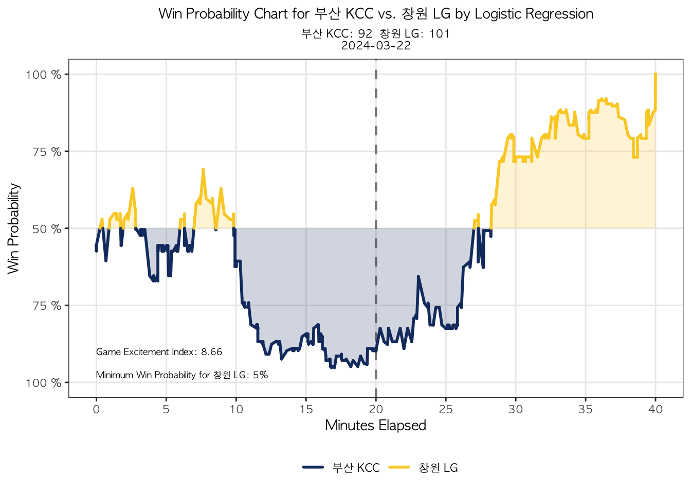

kbl_wp_chart(data=pbp_test, training_data=pbp2, "Logistic Regression", show_labels = T)
kbl_wp_chart_new(data=pbp_test, training_data=pbp2, "Logistic Regression", show_labels = T)

Data is evolving, and so is data in sports. For basketball, it began with basic metrics gleaned from the box score: points, rebounds, assists, and etc. Over time, these traditional statistics transformed into advanced metrics like Player Efficiency Rating and Win Shares. Now, in the contemporary era of basketball, data is being measured and quantified with cutting-edge technologies such as wearables and video cameras.
In contemporary basketball analytics, one of the powerful dataset is play-by-play (PBP) data. Compared to boxscore statistics, PBP data provides richer descriptions of the plays that occurred during the game (Vračar et al., 2016). This detailed resource captures every play along with its corresponding time during a basketball game. PBP data is accessible for leagues like the NBA, WNBA, and NCAA. However, when it comes to the Korean Basketball League (KBL), only box score data is currently available on the KBL website.
While replicating the high-quality PBP data of leagues like the NBA, WNBA, and NCAA for the KBL can be challenging, there are still alternative methods to compile such data. One approach involves utilizing web scraping techniques(i.e., Selenium) to extract information from real-time text updates provided by KBL and platforms like ‘NAVER.’ These updates via text offer descriptions of plays, which allow us to have a rudimentary form of PBP data for further analysis and study after cleansing.
PBP data opens up numerous possibilities for analysis and insights. One intriguing concepts is the Game Excitement Index (GEI) introduced by Luke Benz. GEI seeks to conceptualize how the excitement level of a game after the game has ended. Benz explains that “It’s a predictive metric, attempting to forecast how exciting a game might be.” GEI could be useful for fans especially those who might have limited time. The metric guides which game to watch again as there are a large number of games throughout the season. While it can vary by games and league, following formula shows how GEI can typically be computed:
\[ \Large{GEI = \frac{2400}{T} \sum_{i=2}^{n} |p_i - p_{i-1}|} \]
\(T\) in the formula represents the time remaining in the game with 2400 being the total duration. \(n\) indicates how many number of plays has been executed, and \(p_i\) is the winning probability of home team on \(i\)th play of the game.
To estimate the winning probability, Benz utilized a Logistic Regression algorithm, incorporating variables such as score difference and time remaining for prediction. While he included the pre-game point spread in the model, the sports betting related variables in this project was excluded due to personal reasons as well as time consuming factors.
The training data for this project’s model spanned from October 23, 2023, to March 14, 2024, encompassing a total of 165,266 plays in the dataset. To test the model, games scheduled after March 14, 2024, were utilized for the prediction.
kbl_wp_chart(data=pbp_test, training_data=pbp2, "Logistic Regression", show_labels = T)
kbl_wp_chart_new(data=pbp_test, training_data=pbp2, "Logistic Regression", show_labels = T)
Evaluating the accuracy of a model may not be feasible, as we can not know whether the team won or not during the game. Nonetheless, it’s still worth noting that the models displayed reasonable performance by predicting approximately 50% prior to the game. In fact, they slightly exceeded this threshold indicating the team tends to win more if they have home advantage.
The visualization function heavily relies on the ‘ncaahoopR’ package by Benz. Meanwhile, this project explored four algorithms—Logistic Regression, Naive Bayes, Random Forest, and Neural Network—to analyze prediction patterns and variances.

The predictions of three algorithms—Logistic Regression, Naive Bayes, and Neural Network—predicted similar patterns. However, Random Forest demonstrated a relatively higher variability compared to the other three. Notably, due to this increased variability, the GEI of the Random Forest model was the highest among the four models.
The models in this project were straightforward, comprising the variables of whether a play was made by the home or away team, score difference, and time remaining in seconds. However, there remains a potential to amplify these models by including additional variables, such as the team’s shooting percentage over the last 4 to 5 shots or the streaks of consecutive shots made by the team.
Another intriguing application for play-by-play data is assist network analysis. Network analysis can be used to decompose the sophisticated aspect of player’s team work and their contribution to a team’s interactive plays (Korte et al, 2018). This is known to be vital in the analysis of team sports (Vilar et al., 2013, as cited in Korte et al, 2018). In basketball, network analysis can visualizes the connections between players based on assist frequency. Although assist network is also presented in the package by Benz, a new iteration had to be developed due to data incompatibility. At the same time, the main objective of this visualization was to enhance readability. As the data spans an entire season, it can become challenging to interpret, potentially reducing its usefulness for stakeholders.
kbl_assist_net(data=pbp2, team_select="서울 삼성",random=14,top=13,"lightblue")In the analysis presented above, it’s evident that JungHyun Lee(이정현) had the highest assist frequency, accounting for 26.5% of assists of Seoul Samsung(서울 삼성) from 2023-10-22 to 2024-03-14. Lee, who ranks at third in average assists in the league, contributed 264 points to Kofi Cockburn(코피 코번)’s total, who currently ranks at third in most points averaged in the KBL. Thus, teams preparing to play against Seoul Samsung should prioritize awareness of Cockburn’s movements whenever Lee has the possession of the ball.
We can also observe that Cockburn emerges as an all-around player within the network, contributing to 12.43% of Samsung’s assists. While Cockburn may not excel in Samsung’s defense, this network analysis mathematically prove that he is currently an irreplaceable and invaluable player for Seoul Samsung.
There are wide-ranging methodologies that can be applied by leveraging play-by-play data. In 2021, Grassetti et al. conducted an analysis of the efficiency of various lineups using PBP data. Sports platforms like ESPN has already implemented a winning probability chart on their website, enabling fans to interact with the data and understand how each play impacts the game’s outcome. Likewise, assist network analysis provides practical insights not only for players and coaches in game preparation but also for fans to grasp the dynamics of passing distribution among players. This project manifests the value of such insights, as seen in leagues like the NBA, WNBA, and NCAA. Therefore, we anticipate that the KBL and other Korean sports industries will also adopt similar analyses using play-by-play data, thereby enriching fan engagement with compelling insights into the game.
This project is also in the process of releasing as an R package to contribute in Korean basketball analytics.